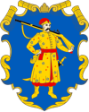
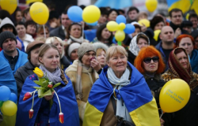
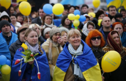

Минуле
Формування ментальності українців
Люди землі
Ми - хлібороби. На СВОЇЙ землі господарюємо, сворюємо, дбаємо про оселю
Повністю

Громади
Ми з покон-віків - громади, які включають об’єднання індивідуальностей
Повністю

Історія
Фольклор розповідає правду,бо ми учасники, творці історії та представляємо її, так як є
Повністю

Творчість
У нас колядки, щедрівки, де возвеличують господаря,господиню, урожай
Повністю
Українське козацтво- унікальне явище в історії світу
Козаки-це державність!
Саме козаки були авторами та реалізаторами ідеї української держави та її легітимації у міжнародній спільноті як незалежної держави.
Цінності
Відвага вірність здатність до самопожертви любов до батьківщини- такі характеристики успадкував
Відвага та безстрашність
Турецький літописець Наїма писав про запорожців: "Можна впевнено сказати, що неможливо знайти на цілій землі сміливіших людей, які так мало б дбали про своє життя і так мало боялися смерті"
Прагнення до неба
Блакитне небо на прапорі України та жовте жито, ще одна ознака нашого прагнення думками відірватися від землі та полетіти в безкрайне небо, вийти за межі простору.
Саме тому українці реалізовували прагнення вийти за межі за допомогою розвитку авіаконструкторських заводів.
Підприємство "Антонов" створило гордість України, який став сиволом українського непереможного духу - "Мрію* - найбільший транспортний літак у світі.

Читати більше
Сьогодення період трансформації
Хто ми сьогодні?
Ми показуємо усьому світові як говорити правду в очі та бути вірним своєму вибору та стояти за нього ми чесні з собою та іншими відважні та стоїмо один за одного.
Ми подаємо приклад всьому світові як жити в умовах незвичності та ще й знаходимо в собі сили підказувати іншим, що робити для підтримки миру у всьому світі ми креативні.
Ми не піддаємо залякуванню та продовжуємо маленькими кроками досягати своєї мети ми сильні духом в нас є воля. Свобода найбільша цінність для нас.
Ми можемо жити без вказівок та самоорганізовуватись спираючи лише на гуманістичні людські цінності ми за мир у всьому світі і ми зможемо показати як цього досягти.
Продовжуємо жити, працювати та надихати весь світ!


"Вчора ми втратили на жаль нашу "Мрію". Але стару "Мрію". А нову ми зараз будуємо. Слава Україні"

Долучайся до марафону будуємо нову омріяну Україну разом!
Поділись думками, якою ти хочеш бачити Україну після перемоги?
Україна першою у світі запустила юридично легалізовані цифрові паспорти.
Україна першою у світі запустила юридично легалізовані цифрові паспорти.
Україна першою у світі запустила юридично легалізовані цифрові паспорти.
Україна першою у світі запустила юридично легалізовані цифрові паспорти.
Україна першою у світі запустила юридично легалізовані цифрові паспорти.
Україна першою у світі запустила юридично легалізовані цифрові паспорти.
Майбутнє
Майбутнє України - це її люди!
Україна зможе зформулювати свої ціннісні орієнтири та транслювати їх на весь світ, а саме: Можливо все, навіть те, у що ви не вірите! А вихід за рамки самого себе - це більш гуманістично, ніж постійно прагнути вийти за рамки

Українці, як нація, стають зразком волевиявлення та прикладом побудови демократичних відносин не ”згори донизу”, а “знизу догори”!
Україна запрошує до першого в світі проекту колективної відбудови країни, в якій будуть задіяні ініціативи різних країн світу. Таким чином Україна дає можливість всьому світові відчути, що таке колективна стратегія та транслює нову етику відносин в світі
Україна згадає про своє прагнення до неба та сонця, й запропонує новий проект: щоб закінчити війни на Землі, давайте будемо співпрацювати для нашого нового життя в космосі
Ми- нація вільних людей, які будують нову свою країну!


 

{kind=link}
{kind=link}
{kind=link}
{kind=link}
{kind=link}
{kind=link}
{kind=link}
{kind=link}
{kind=link}
{kind=link}
2023, Дубницький Ілля